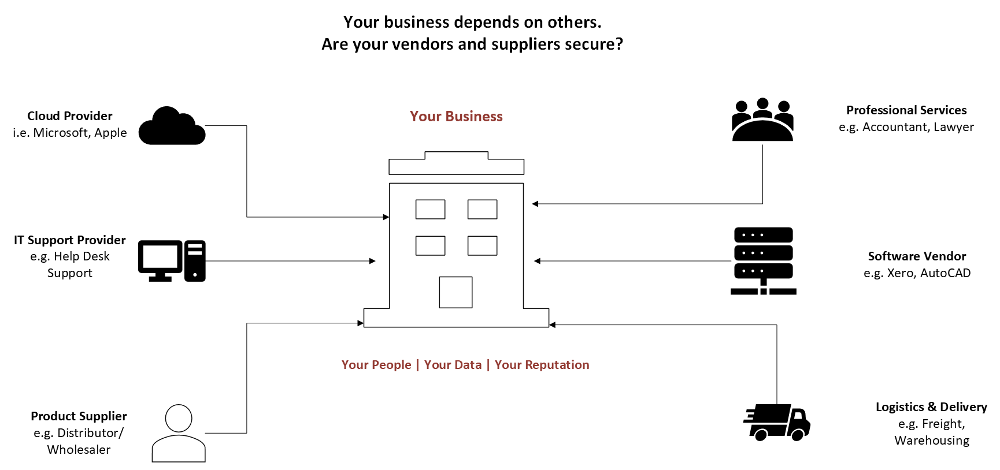

Small Business Owners
Reduce the risk of payment redirection, vendor compromise, impersonation and communication-related fraud.
SECURE COMMUNICATIONS and VENDOR SECURITY TOOLKIT
A practical toolkit designed to help small businesses and community organisations strengthen communication security, assess vendor risks, maintain trusted contact information and prepare for communication-related cyber incidents.
Overview
Business email compromise, invoice redirection, impersonation, insecure messaging, and vendor-related incidents can cause financial loss, operational disruption, and reputational damage. This toolkit helps organisations take practical steps to strengthen trusted communications, assess vendor risks, and improve security oversight.
Vendor & Supplier Risk
Suppliers, vendors and service providers can support your business, but they can also introduce cyber risk. Their security can affect your people, your data and your reputation.

Who It's For
Reduce the risk of payment redirection, vendor compromise, impersonation and communication-related fraud.
Manage vendor relationships, communication controls, escalation paths and third-party risks.
Strengthen communication practices and vendor oversight using practical, easy-to-use tools.
Preview
These are sample questions from the toolkit. The full checklists provide a structured assessment across communication security, verification, vendor access, security controls, incident management, data protection, governance and operational resilience.
Supporting Materials
The toolkit includes practical checklists, trusted contact records, vendor assessment prompts, incident response guidance, executive summary templates, and action planning support designed to help organisations improve resilience without unnecessary complexity.
Practical Toolkit
The Secure Communications and Vendor Security Toolkit is designed for organisations that rely on email, messaging platforms, vendors and service providers, payment instructions, shared documents, and third-party systems.
It focuses on practical risks such as business email compromise, payment redirection, vendor compromise, insecure file sharing, unclear escalation contacts, poor verification practices, and weak vendor security oversight.
It is suitable for small businesses, community organisations, managers, project leaders, and teams responsible for vendor relationships, communication practices, or operational resilience.
Includes practical prompts and planning tools to help organisations assess current practices, identify gaps, prioritise improvements, and strengthen communication and vendor security over time.
The Secure Communications & Vendor Security Toolkit is available as a PDF containing practical checklists, templates, registers, response guidance, and action planning support.
Secure Communications & Vendor Security Toolkit - AU$79
Secure payment powered by Stripe. Toolkit PDFs are personally reviewed and emailed within one business day.
Need help implementing the toolkit?
One-on-one consultation is available to review vendor risks,
strengthen communication practices and develop a practical improvement plan.
These templates provide general guidance and should be adapted to individual circumstances. They do not constitute legal, regulatory, financial, or other professional advice.